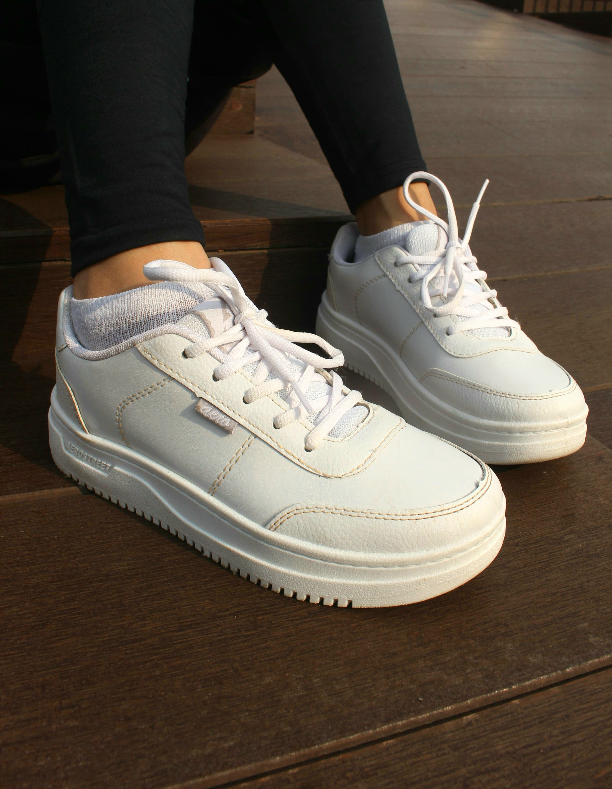
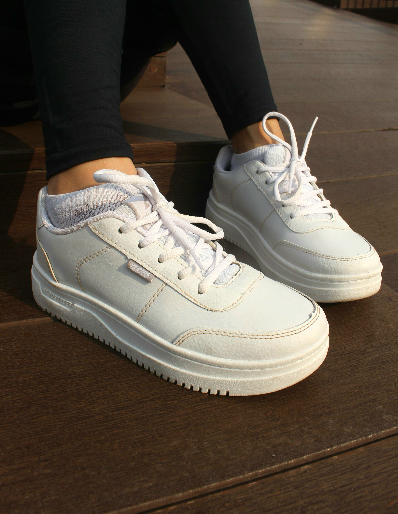

Naila's Portofolio
Hai, Naila Sufa Ma'sumah. Di sini, Anda bisa melihat beberapa hasil karya Fotografi dengan tema Naila's World: A Journey Through My Photography.
 

About Me
Welcome to my photography portfolio! Saya Naila Sufa Ma’sumah. Mahasiswa Universitas Negeri Semarang angkatan 2022. Saya sangat bersemangat untuk selalu mengabadikan momen luar biasa dalam sehari-hari. Fotografi bukan sekedar hobi bagi saya, ini adalah cara melihat dunia, sebuah media yang melalui saya mengekspresikan kreativitas saya dan terhubung dengan keindahan di sekitar kita. Tujuan saya adalah menciptakan gambar yang tidak hanya menyenangkan mata tetapi juga menyentuh hati.
Terima kasih telah mengunjungi portofolio saya, saya harap anda menikmati karya saya seperti saya menikmati saat membuatnya. Jika anda ingintahu kebih banyak tentang saya atau berkolaborasi dalam suatu proyek, silahkan menghubungi kami!
Contact Me
Instagram: instagram.com
WhatsApp: whatsapp.com